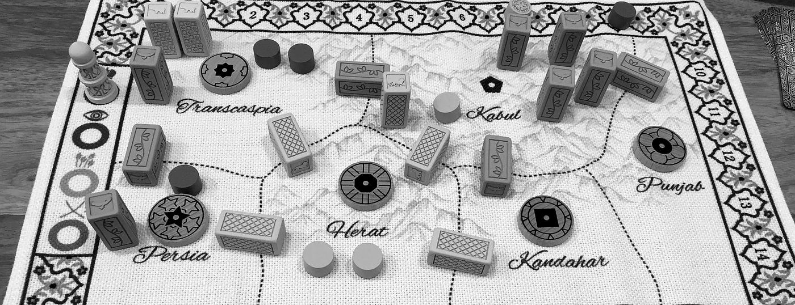

Now
I build AI products at Sandgarden, where I work on Doc Holiday and Featurette. Before that I spent most of a decade shipping security and infrastructure products.
On evenings and weekends I am building an unofficial digital implementation of the BattleForce game system from BattleTech, written with Claude Code.
Elsewhere

BattleForce
A digital implementation of the BattleForce game system, built for people who already own the books and want to stop doing the arithmetic by hand. It is an unofficial fan project, not affiliated with or endorsed by Catalyst Game Labs, Topps, or Microsoft. BattleTech and BattleForce are trademarks of their respective owners.